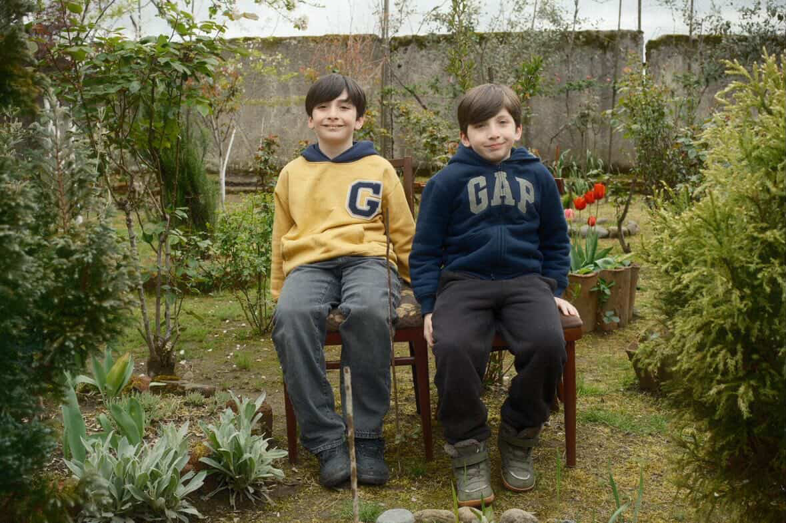
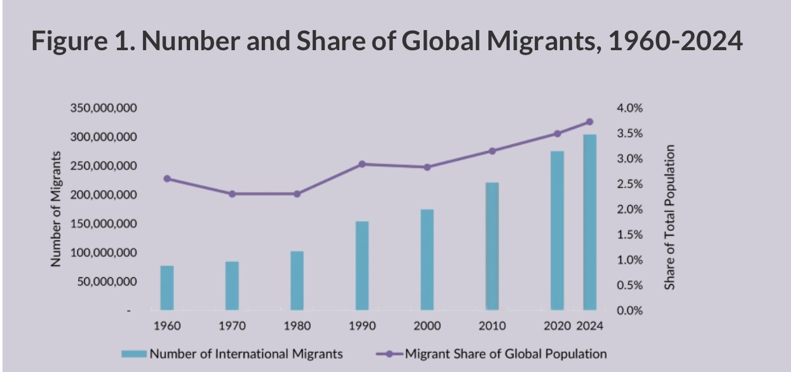

The project is deeply personal and emotional. From morning to night, most of my thoughts are connected to being a mother. But my experience of motherhood is not simple. I live in one country, and my children live in another. So, I am always somewhere in between present and absent at the same time. I have been separated from my children for seven years. When I left, they were two and five. Over time, our relationship started to exist through screens, through sound, through daily calls. I know their voices, their faces, their routines, but only in this mediated way. One of the hardest moments was seeing them again after two and a half years. Their voices were not what my brain had memorized. It felt unfamiliar, almost like I didn’t know who they were for a moment. I didn’t know their smell, their height, the small details of their personalities that you only understand by being physically close. That moment stayed with me. It made me realize that even though we are connected every day, there is still a distance that cannot be fully closed. At the same time, technology becomes the only space where we stay together. Voice messages, video calls, and social media are not just communication, it’s where our relationship continues to exist. I am mentally with them, even when I am physically somewhere else.

Figure 2.Source: Backyard in Georgia, where my children live. Photograph by Mariam Tchantchaleishvili, 2026
This experience became the starting point of my project and led to the decision to create a sound-based immersive environment where sound becomes the main medium. Through this, I try to express what it means to be a mother at a distance, to live in two places at once, and to exist in a constant in-between state. With that said, I want the viewer to experience the state of being mentally there while you are emotionally here.
Global Context of Migration
Migration today is not an exception; it is a global condition. According to UNESCO, there are over 280 million international migrants worldwide. Behind these numbers, there is a very specific reality that often stays invisible: many of these women are mothers who leave their home countries to work while their children remain behind.

Figure 1.Source: Migration Policy Institute (MPI) tabulation of Data from the United Nations Department of Economic and Social Affairs (UNDESA) 2024
This movement is often explained through economic reasons, but statistics alone do not fully explain what is happening. Migration is not only about labor or opportunity, but it is also about separation, distance, and the restructuring of family life. In my own experience, this is not an abstract idea but a lived reality. Seven years ago, after my divorce, I realized that staying in Georgia would limit both my personal growth and the opportunities I could provide for my children. I made the difficult decision to move to New York to continue my education and build a new life. I arrived in a city where I did not know a single person and began life again from zero. In doing so, I left behind everything and, most painfully, my children. This decision was not simply about economic opportunity, but about imagining a different future for them and for myself.
For many migrant women, work abroad is directly connected to care. As Natali Tchamiashvili explains in her research on Georgian migrant women, this labor is often physically and emotionally demanding, centered around caring for other people’s children, the elderly, or households. At the same time, these women are separated from their own families, creating a contradiction in which they provide care professionally while being unable to provide it personally (Tchamiashvili, 2022). This creates what scholars describe as a “global care chain,” where care is redistributed across borders (Hochschild, 2000; Parreñas, 2001). This structure is not distant from lived experience. When I first arrived in New York, I entered the same system through my work in care. For several years, I worked as a companion and caregiver for individuals with stroke, dementia, and physical disabilities. The work required constant emotional presence, patience, and physical endurance. I was responsible for comforting, supporting, and caring for others during their most vulnerable moments. At the same time, I was separated from my own children. I was caring for others while being unable to care for them. I could not travel to see them for long periods, and this absence became part of everyday life. Over time, this created a quiet but persistent emotional tension: being fully present for others, while feeling the distance from my own family at every moment.
What I describe here is not an exception, but part of a broader pattern in which a mother leaves her child to care for another family, while someone else takes care of her own child back home. Over time, this separation becomes normalized. Families adapt. Children grow. Decisions are made without the mother being physically present. And slowly, the mother is no longer fully part of the family's everyday image. She exists, but at a distance.
Migration does not remove motherhood, but it changes it. As Hondagneu-Sotelo and Avila argue, motherhood expands beyond physical presence and becomes something that exists across distance (Hondagneu-Sotelo and Avila 1997). However, this transformation is not neutral. In many cases, these women do not openly express their emotional experiences. Their sacrifice is understood as necessary, and once planned temporarily, it becomes permanent. The idea of motherhood remains strong, but the reality of it becomes fragmented. The idea of what it means to be a “good mother” becomes unstable in the context of migration. As Williams Veazey suggests, migrant maternal identities are shaped across different cultural and geographical spaces, where expectations of motherhood often conflict (Veazey, 2020). In many societies, a “good mother” is still associated with physical presence and daily care. Within this framework, mothers who leave their children are often judged as failing in their role. I have felt this tension personally. There is a quiet but persistent question: if a mother is not physically present, is she still a “good mother”? And even more deeply, is she still fully recognized as a mother at all?
Personally, I believe that separation is not a failure of motherhood, but a condition of it. It has become part of my life and part of how I understand care. Rather than weakening the relationship, this distance has made me stronger and more determined. My children remain my motivation to grow, to become a better version of myself, and to build a life where we can be together again as a whole family.
Communication as Survival: New Media and Polymedia
Communication as Survival: New Media and Polymedia Migrant women exist in multiple realities at the same time. They are physically in one place but emotionally in another. They are part of their families, yet also outside of them. In this condition of separation, communication becomes essential. As Williams Veazey suggests, digital media is not only a tool for communication but also a space where migrant mothers express emotions and maintain a sense of presence despite physical distance (Veazey, 2020). It is not optional; it becomes a form of survival. Madianou and Miller explain that in transnational families, new media play a central role in maintaining relationships across distance (Madianou and Miller). Phone calls, messages, voice notes, and video calls become the primary ways mothers stay connected with their children. They introduce the concept of polymedia to describe how communication operates across multiple platforms, where the choice of medium itself carries emotional and social meaning (Madianou and Miller). Communication is not limited to one form but exists across different layers. A phone call can feel intimate, a text message can feel distant, and silence can feel like absence.
These dynamics are visible in everyday moments. When I first moved to the United States, my children were three and five years old. At that time, communication was limited. Because they were very young, it was difficult for them to speak for long or share their thoughts. Our connection depended mostly on my mother, who would send me photos and short video clips and let me speak to them briefly over the phone while they were playing. As they grew older, our ways of communication changed. We started using different platforms more actively. We played simple games together through Facebook Messenger, I helped them with homework, and we shared small details from our daily lives. These interactions made our connection feel stronger, even from a distance. Communication was not always easy. There were moments when they did not want to talk on the phone, when they were tired or distracted, and those moments felt painful. But there were also important moments of connection. For example, during holidays, I often celebrate twice. First, I celebrate with my children according to Georgian time, where I am present through the phone, sharing the moment from a distance. Then, hours later, I celebrate again in New York with friends and people who have become my family here. Through these experiences, communication became more than just staying in touch. It became a way of managing distance and maintaining our relationship across different forms of media
Presence and Absence Through Mixed Reality
While existing research explains the structural and social aspects of transnational motherhood, it often does not fully capture what this experience feels like. This project responds to that gap. By using sound, voice fragments, and immersive media, I aim to translate this condition into a sensory experience. Instead of explaining migration, the project allows the audience to feel it. The overlapping voices, interruptions, and distances reflect the logic of polymedia and the emotional reality of living between places. It is not a complete narrative. It is fragmented, just like the experience itself.
After examining transnational motherhood through research, I initially intended to build this project around multiple interviews with migrant mothers. My goal was to create a broader narrative that would reflect shared experiences across different women, cultures, and conditions. I was interested in showing how separation, care, and responsibility are negotiated across distance, and how many mothers live between two places at once.
However, during the process and after receiving feedback, I realized that the project becomes more powerful when it is more personal. Instead of trying to represent many voices, I shifted my focus to my own experience as a migrant mother. This change allowed me to move away from a generalized perspective and toward something more intimate and emotionally direct. Rather than explaining the condition, I wanted to let the viewer feel it through my own lens. At the same time, I explored different forms of immersive and sensory experiences as part of my research. I attended The Arc at The Shed, where the audience sat in front of live actors while wearing a headset. This experience influenced my thinking about presence, distance, and how physical and virtual realities can exist together. It helped me understand how a viewer can feel both inside and outside of a space at the same time. I was also inspired by Laurie Anderson’s Chalkroom, which uses spatial environments and sound to create a disorienting and emotional experience. This work influenced my decision to create a corridor-like structure, where the viewer is physically contained but mentally transported elsewhere. At the same time, I began to think more about sound as a central element. Sound is one of the main ways we connect in everyday life. Conversation becomes a form of presence when physical closeness is not possible. Because of this, I decided that sound would become the focal point of my project. This exploration led me to develop a work that combines physical installation, sound, and virtual reality to express the condition of being present in one place while emotionally existing in another.
The physical space is constructed as a narrow corridor using wire structures that function as walls. This material choice is not only aesthetic but deeply symbolic. In Georgia, around 20% of the territory is occupied by Russia, and these areas are separated by physical wire fences. These borders create a specific and painful condition: the land exists, it belongs to us, but it is inaccessible. You can see it, but you cannot cross it. For me, this became a powerful metaphor for separation. By translating this into the installation, the wire walls represent both geopolitical and personal boundaries. They reflect the experience of being close yet unable to reach, a condition that exists not only in national borders but also in family relationships shaped by migration.
The use of still wire further reinforces this idea. It is a material that allows visibility and transparency, yet it still restricts movement. This creates a tension between openness and limitation. In this way, the installation suggests a subtle form of confinement, where one can see beyond but cannot pass through. This reflects my own experience of living abroad: having opportunities and mobility, but still being constrained by immigration systems, documentation, and legal conditions that limit my ability to travel freely to my children.
Attached to the wire walls are printed documents related to immigration. These documents become part of the visual and conceptual structure of the work. They represent another layer of separation, which is bureaucratic and invisible. In my case, these documents are not abstract; they directly shape my ability to move, to return, and to be physically present with my children. Displayed in the installation, they resemble an exhibition, but also function as evidence of a lived condition.
The viewer is invited to sit inside the corridor wearing a VR headset, which transports them into a 360-degree environment: Seeing my Children in a yard in Georgia, where they are growing up with the help of my parents. In this virtual space, the viewer hears a conversation between my children and me, creating a sense of intimacy and presence.
The experience moves between these two realities. At certain moments, the viewer is fully immersed in the virtual environment, feeling as if they are present in the yard, close to the children. At other moments, their awareness returns to the physical space: the wire walls, the documents, the feeling of restriction. This shift is intentional and important. It reflects the unstable condition of transnational motherhood, where presence is never fixed. One is constantly moving between here and there, between connection and absence
This oscillation can also be understood through the concept of polymedia, introduced by Mirca Madianou and Daniel Miller, which describes how communication across distance is shaped not by a single medium, but by the emotional and social choices between multiple media (Madianou and Miller). In this project, the conversation heard in the VR space represents a mediated connection, but it also shows that the ability to communicate does not remove separation; it reshapes it. Through this combination of physical installation and virtual immersion, the project creates a layered experience of space, distance, and connection. The viewer is not only observing but is placed within a condition where they must navigate both emotional closeness and physical separation at the same time.
Ultimately, the work explores how distance is not only geographical but structured through political borders, legal systems, and technological mediation. It reflects how these forces shape what it means to be a mother across distance, connected yet separated.